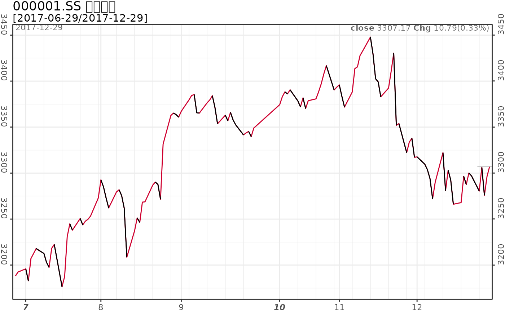
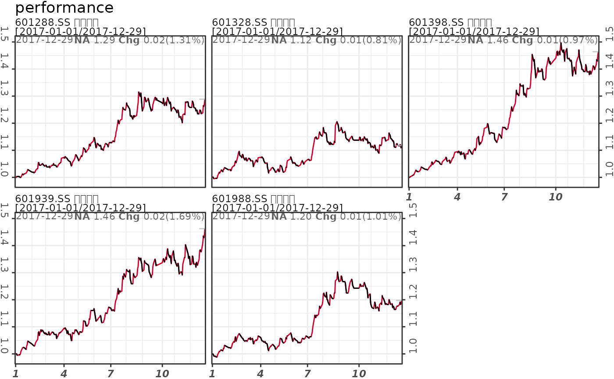
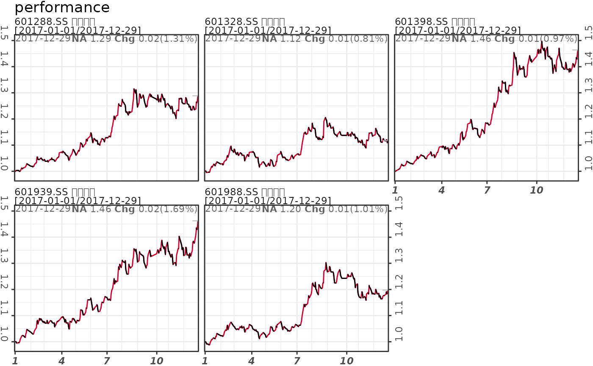

pq_plot provides an easy way to create charts for time series dataset based on predefined formats.
pq_plot(dt, chart_type = "line", date_range = "max", from = NULL,
to = Sys.Date(), x = "close|value", addti = NULL,
linear_trend = NULL, cumreturns = FALSE, freq = "daily",
yaxis_log = FALSE, color_up = "#CF002F", color_down = "#000000",
multi_series = list(nrow = NULL, ncol = NULL), rm_weekend = NULL,
title = NULL, interact = FALSE, ...)Arguments
- dt
a list/dataframe of time series dataset
- chart_type
chart type, including line, step, bar, candle.
- date_range
date range. Available value includes '1m'-'11m', 'ytd', 'max' and '1y'-'ny'. Default is max.
- from
the start date. Default is NULL. If it is NULL, then calculate using date_range and end date.
- to
the end date. Default is the current date.
- x
the name of column display on chart.
- addti
list of technical indicators or numerical columns in dt. For technical indicator, it is calculated via
pq_addti, which including overlay and oscillator indicators.- linear_trend
a numeric vector. Default is NULL. If it is not NULL, then display linear trend lines on charts.
- cumreturns
logical, display the cumulative returns. Default is FALSE.
- freq
the data frequency. It supports c('daily', 'weekly', 'monthly', 'quarterly', 'yearly').
- yaxis_log
logical. Default is FALSE.
- color_up
the color indicates price going up
- color_down
the color indicates price going down
- multi_series
a list. It display the number of ncol or nrow, and the yaxis scales in 'free'/'free_y'/'free_x'. Default is NULL.
- rm_weekend
whether to remove weekends in xaxis. The default is TRUE for candle and bar chart, and is FALSE for line and step chart.
- title
chart title. It will added to the front of chart title if it is specified.
- interact
whether to create a interactive graphics, defaults to FALSE.
- ...
ignored
Examples
# \donttest{
# single symbol
data(dt_ssec)
# dt_ssec = md_stock('^000001', source='163', date_range = 'max')
# chart type
pq_plot(dt_ssec, chart_type = 'line', date_range = '6m') # line chart (default)
#> $`000001.SS`

#>
# pq_plot(dt_ssec, chart_type = 'step', date_range = '6m') # step line
# pq_plot(dt_ssec, chart_type = 'candle', date_range = '6m') # candlestick
# pq_plot(dt_ssec, chart_type = 'bar', date_range = '6m') # bar chart
# add technical indicators
pq_plot(dt_ssec, chart_type = 'line', addti = list(
sma = list(n = 200),
sma = list(n = 50),
macd = list()
))
 #> $`000001.SS`
#> TableGrob (2 x 1) "arrange": 2 grobs
#> z cells name grob
#> p0 1 (1-1,1-1) arrange gtable[layout]
#> p1 2 (2-2,1-1) arrange gtable[layout]
#>
# linear trend with yaxis in log
pq_plot(dt_ssec, chart_type = 'line', linear_trend = c(-0.8, 0, 0.8), yaxis_log = TRUE)
#> $`000001.SS`
#> $`000001.SS`
#> TableGrob (2 x 1) "arrange": 2 grobs
#> z cells name grob
#> p0 1 (1-1,1-1) arrange gtable[layout]
#> p1 2 (2-2,1-1) arrange gtable[layout]
#>
# linear trend with yaxis in log
pq_plot(dt_ssec, chart_type = 'line', linear_trend = c(-0.8, 0, 0.8), yaxis_log = TRUE)
#> $`000001.SS`
 #>
# multiple symbols
# download datasets
# dat = md_stock(c('FB', 'AMZN', 'AAPL', 'NFLX', 'GOOG'), date_range = 'max')
# dat = md_stock(c('^000001', '^399001', '^399006', '^000016', '^000300', '^000905'),
# date_range = 'max', source='163')
data(dt_banks)
dat = md_stock_adjust(dt_banks, adjust = TRUE)
# linear trend
pq_plot(dat, multi_series=list(nrow=2, scales='free_y'), linear_trend=c(-0.8, 0, 0.8))
#> $multi_series
#>
# multiple symbols
# download datasets
# dat = md_stock(c('FB', 'AMZN', 'AAPL', 'NFLX', 'GOOG'), date_range = 'max')
# dat = md_stock(c('^000001', '^399001', '^399006', '^000016', '^000300', '^000905'),
# date_range = 'max', source='163')
data(dt_banks)
dat = md_stock_adjust(dt_banks, adjust = TRUE)
# linear trend
pq_plot(dat, multi_series=list(nrow=2, scales='free_y'), linear_trend=c(-0.8, 0, 0.8))
#> $multi_series
 #>
pq_plot(dat, multi_series=list(nrow=2, scales='free_y'), linear_trend=c(-0.8, 0, 0.8),
yaxis_log=TRUE)
#> $multi_series
#>
pq_plot(dat, multi_series=list(nrow=2, scales='free_y'), linear_trend=c(-0.8, 0, 0.8),
yaxis_log=TRUE)
#> $multi_series
 #>
# performance
pq_plot(dat, x='close', multi_series = list(nrow=2), cumreturns=TRUE, date_range = 'ytd')
#> $multi_series

#>
pq_plot(dat, x='close', multi_series = list(nrow=1, ncol=1), cumreturns=TRUE, date_range = 'ytd')
#> $multi_series
#>
# performance
pq_plot(dat, x='close', multi_series = list(nrow=2), cumreturns=TRUE, date_range = 'ytd')
#> $multi_series

#>
pq_plot(dat, x='close', multi_series = list(nrow=1, ncol=1), cumreturns=TRUE, date_range = 'ytd')
#> $multi_series
 #>
# }
#>
# }